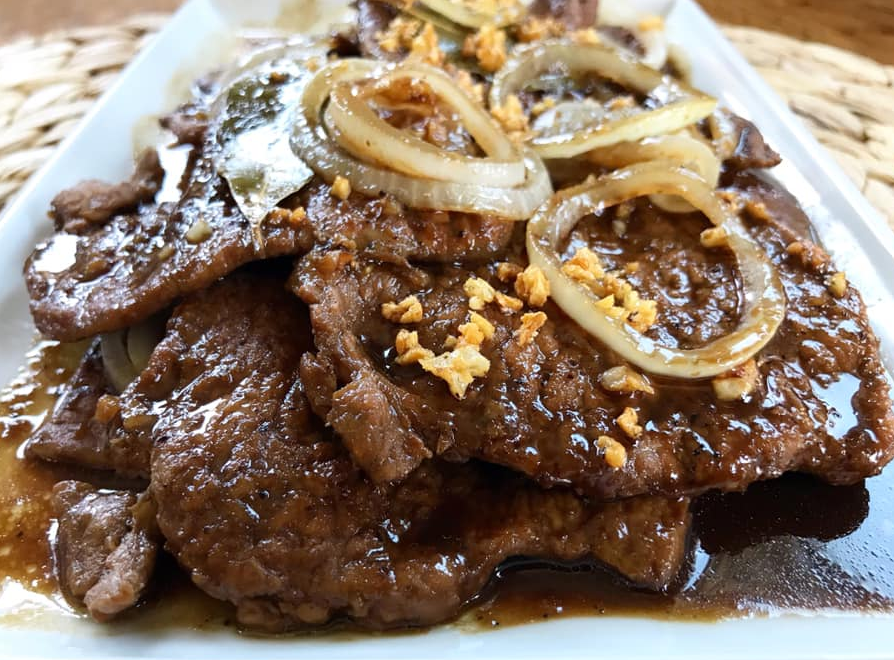

Pork Bistek
a dish made of strips of salted and peppered sirloin beef, usually flattened with a meat tenderizing tool, slowly cooked in soy sauce, calamansi juice, garlic and onions, a specialty of the Tagalog region.
This variation uses pork instead of beef.
-Wikipedia

Ingredients:
- 1 kg Pork Chops
- 2 tablespoon minced garlic
- 1/4 cup soy sauce
- Calamansi or Lemon, Juiced (about 1/4 cup)
- 2 tablespoon sugar
- 1 Onion (cut into rings)
- 2 or more cups of water (enough to submerge pork in a pot)
Instructions:
- In a pot, Saute minced garlic until slightly brown.
- Add Pork, Saute until slightly brown.
- Add soysauce, calamansi or lemon, sugar, onion and water.
- Boil until pork is soft and sauce is thin.
- Serve with fresh onion rings on top and Enjoy!
Return to Home